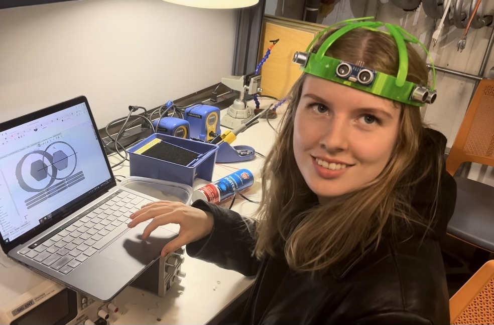
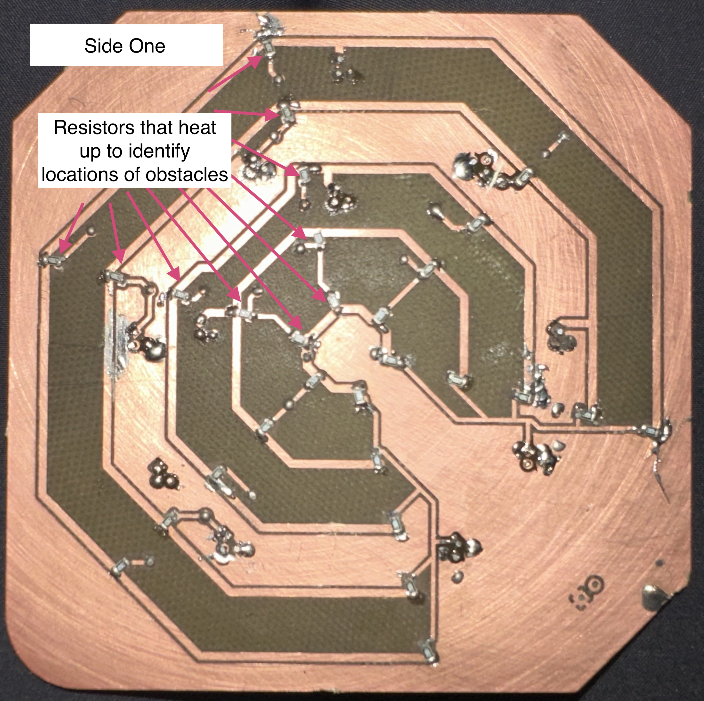

Tactile Vision is a project aimed at providing mobility assistance for the visually impaired by converting sensor data into tactile feedback via a custom headset and handheld device.
I led a team of four to design this:


One of my friends has a disability that requires her to have a service dog. This experience highlighted the challenges—be it cost, allergies, or the ability to care for a service animal—that prevent many from obtaining necessary mobility assistance. With Tactile Vision, we aim to eliminate those obstacles.
Tactile Vision collects data from sensors mounted on a custom headset and translates that information into a “heatmap” on a handheld device. The headset features six evenly spaced ultrasonic sensors connected to a Raspberry Pi Pico W (nicknamed “megamind”), which communicates via Bluetooth with a second Raspberry Pi. This second unit controls the handheld device, where resistor arrays heat up to indicate both the direction and proximity of obstacles. (For example, the closest resistor indicates an obstacle 0–2 ft away, the next 2–4 ft away, and so on.) Note that while we achieved partial functionality during testing, a fully functional prototype was not realized due to PCB etching issues.
We began by brainstorming and assessing various designs for mobility assistance. After settling on Tactile Vision, we designed a headset in SolidWorks and created a custom circuit board in KiCAD. The headset was 3D printed using flexible TPU filament, and the PCB was produced via laser and mill. Following assembly—soldering approximately 100 components—we programmed the controllers in Python to read sensor data, transmit it via Bluetooth, and drive the tactile feedback on the handheld device.
We encountered several challenges: the PCB laser cutter struggled to cut through the copper layer, Python code bugs proved daunting, and a shortage of ultrasonic sensors complicated our build. Despite these hurdles, our team persisted—Dan resolved the PCB issues, Justin meticulously debugged the code, and Monica sourced extra sensors through community contacts.
Team Tactile Vision emerged successful; we honed new skills, collaborated effectively, and produced a prototype we’re proud of. Each obstacle was met with determination, and our diverse backgrounds combined to make a truly innovative project.
Throughout HackGTX, we refined our abilities in SolidWorks, KiCAD, Python, GitHub, and various fabrication techniques. Each team member contributed unique strengths, and our collaborative efforts allowed us to overcome challenges and grow professionally.
Partnered with a leading computer vision company. Since there are already many great sensing devices on the market, we are making use of existing ones and narrowing our scope to focus on the tactile output layer.